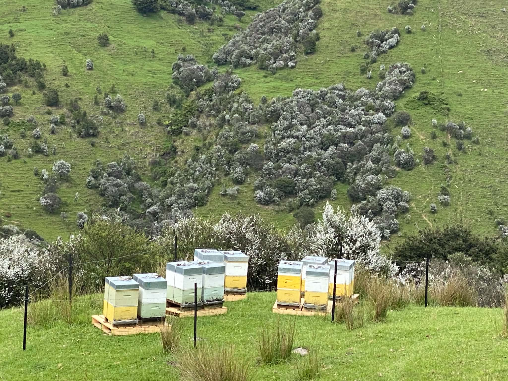
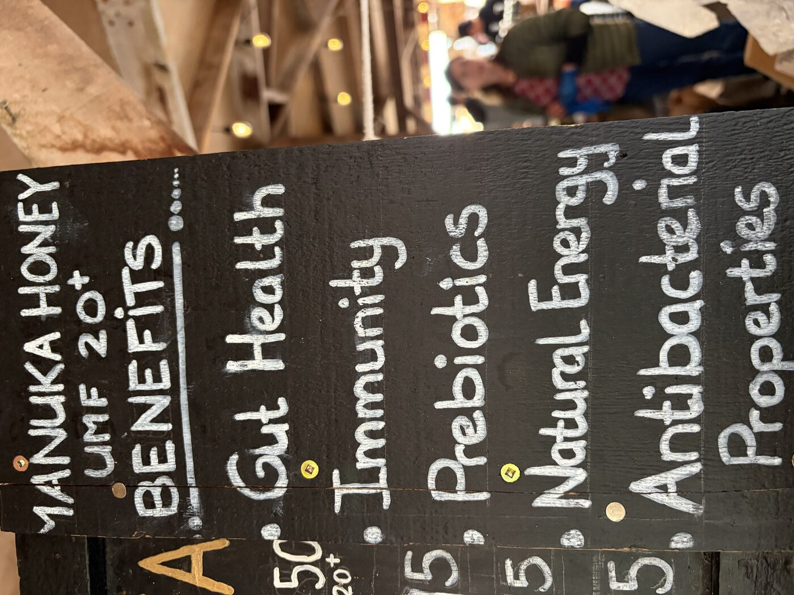
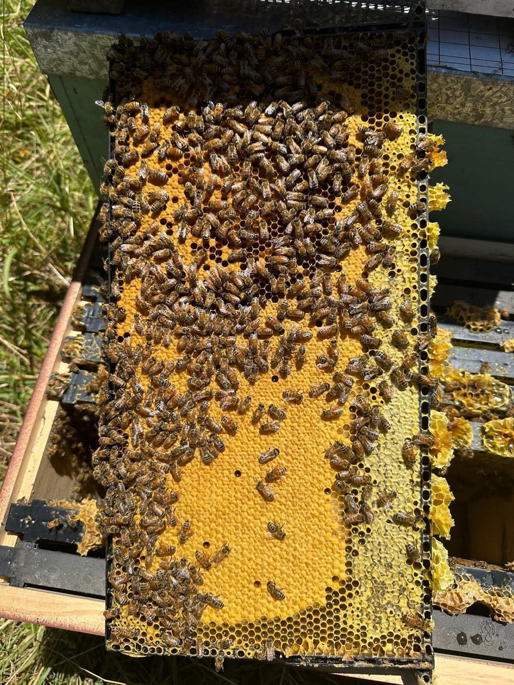

建築業から、養蜂の道へ
Rogerは33年間、建築の仕事に携わってきました。2010年、彼はそのキャリアに区切りをつけ、 ニュージーランド・マタカナの自然の中で養蜂家としての新しい人生を歩み始めます。
Rogerの飼育方針の中心にあるのは、ミツバチたちの生活の質を大切にするという考え方です。 効率や生産量を優先するのではなく、ミツバチが健やかに過ごせる環境づくりを第一に、 日々の世話を続けています。
Rogerの人柄

Roger自ら手がけた看板には、マヌカハニーへの思いが込められています。 効率よりもミツバチと向き合う時間を大切にする、彼らしい一枚です。
マタカナならではの、複雑な風味
Rogerのマヌカハニーは、UMF10〜20の間で採取されています。この地域ではマヌカだけでなく、 Rewa-Rewa（レワレワ）やKanuka（カヌカ）といった在来植物の蜜も混ざり合うため、 他にはない独自の風味が生まれます。

マヌカハニーそのものについて、詳しく知りたい方へ
マヌカについて見る本ページの内容はMatakana Honey公式サイトの記載をもとに、許可を得て掲載しています。